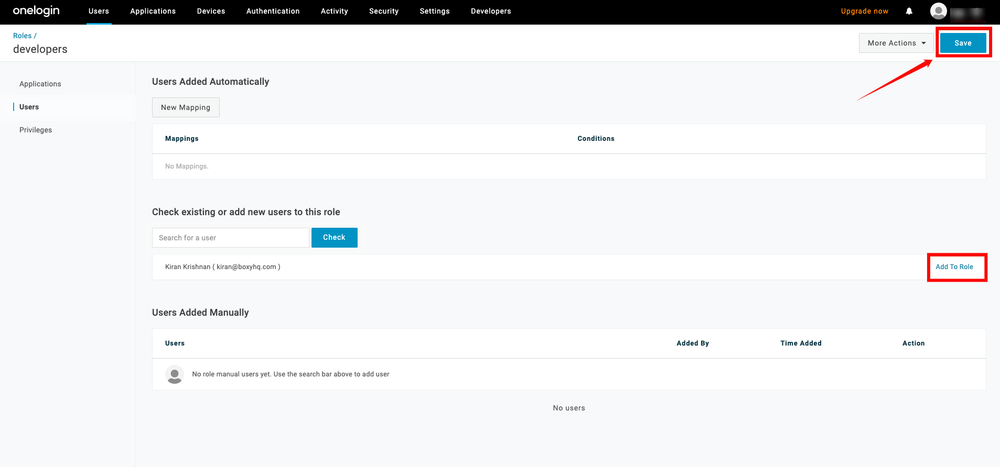
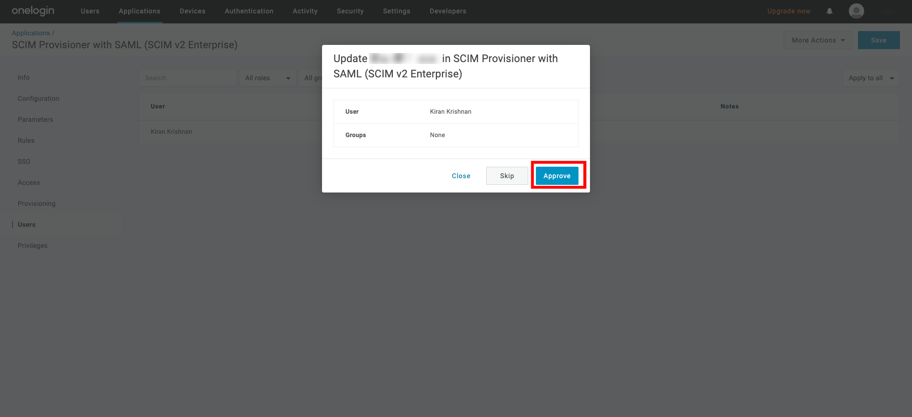

Directory Sync
Directory Sync, also known as User and Group Provisioning, automates the synchronization of users and groups between your identity provider (IDP) and the Qualytics platform. This ensures that your user data is consistent across all systems, improving security and reducing the need for manual updates.
Directory Sync Overview
Directory Sync automates the management of users and groups by synchronizing information between an identity provider (IDP) and your application. This ensures that access permissions, user attributes, and group memberships are consistently managed across platforms, eliminating the need for manual updates.
How Directory Sync Works with SCIM
SCIM is an open standard protocol designed to simplify the exchange of user identity information. When integrated with Directory Sync, SCIM automates the creation, updating, and de-provisioning of users and groups. SCIM communicates securely between the IDP and your platforms API using OAuth tokens to ensure only authorized actions are performed.
General Setup Requirements
To set up Directory Sync, the following are required:
- Administrative access to both the identity provider and Qualytics platform
- A SCIM-enabled identity provider or custom integration
- The OAuth client set up in your IDP
- SCIM URL and OAuth Bearer Token generated from the Qualytics platform
Getting Started
Prerequisites for Setting Up Directory Sync
Before setting up Directory Sync, ensure you have the following:
- A SCIM-supported identity provider
- Administrative privileges for both your IDP and Qualytics
- A SCIM URL and OAuth Bearer Token, which will be generated from your Qualytics instance
Quick Start Guide
- Set up an OAuth client in your IDP.
- Configure the SCIM endpoints with the SCIM URL and OAuth Bearer Token.
- Assign users and groups to provision in the IDP.
- Monitor the synchronization to ensure proper operation.
What is SCIM?
SCIM is a standardized protocol used to automate the exchange of user identity information between IDPs and service providers. Its goal is to simplify the process of user provisioning and management.
SCIM improves efficiency by automating user lifecycle management (creation, updating, and de-provisioning) and ensures that data remains consistent across platforms. It also enhances security by minimizing manual errors and ensuring proper access control.
SCIM includes endpoints that are configured within your IDP and your platform. It uses OAuth tokens for secure communication between the IDP and the Qualytics API, ensuring that only authorized users can manage identity data.
Benefits of Using SCIM for User and Group Provisioning
By leveraging SCIM (System for Cross-domain Identity Management), Directory Sync simplifies user management with:
- Automated user provisioning and de-provisioning
- Reduced manual intervention, improving efficiency and security
- Real-time updates of user data, ensuring accuracy and compliance
- Support for scaling user management across organizations of any size
Supported Providers
Our API supports SCIM 2.0 (System for Cross-domain Identity Management) as defined in RFC 7643 and RFC 7644. It is designed to ensure seamless integration with any SCIM-compliant identity management system, supporting standardized user provisioning, de-provisioning, and lifecycle management. Additionally, we have verified support with the following providers:
- Microsoft Entra (Azure Active Directory)
- Okta
- OneLogin
- JumpCloud
Unsupported Providers
We do not support Google Workspace, as it does not offer SCIM support. Organizations using Google Workspace must use alternate methods for user provisioning.
Providers
1. Microsoft Entra
Creating an App Registration
Step 1: Log in to the Microsoft Azure Portal, and select Microsoft Entra ID from the main menu.
Step 2: Click on Enterprise Applications from the left navigation menu.

Step 3: If your application is already created, choose it from the list and move to the section Configuring SCIM Endpoints. If you haven't created your application yet, click on the New Application button.

Step 4: Click on the Create your own application button to create your application.
Step 5: Give your application a name (e.g., "Qualytics OAuth Client" or "Qualytics SCIM Client").

Step 6: After entering the name for your application, click the Create button to finalize the creation of your app.

Configuring SCIM Endpoints
Step 1: Click on Provisioning from the left-hand menu.
Step 2: A new window will appear, click on the Get Started button.
Step 3: In the Provisioning Mode dropdown, select Automatic and enter the following details in the Admin Credentials section:
-
Provisioning Mode: Select Automatic.
-
Tenant URL:
https://your-domain.qualytics.io/api/scim/v2 -
Secret Token: Generate this token from the Qualytics UI when logged in as an admin user. For more information on how to generate tokens in Qualytics, refer to the documentation on Tokens.

Step 4: Click on the Test Connection button to test the connection to see if the credentials are correct.

Step 5: Expand the Mappings section and enable your app to enable group and user attribute mappings. The default mapping should work.
Step 6: Expand the Settings section and make the following changes:
- Select Sync only assigned users and groups from the Scope dropdown.
- Confirm the Provisioning Status is set to On.
Step 7: Click on the Save to save the credentials. Now you've successfully configured the Microsoft Entra ID SCIM API integration.

Assigning Users and Groups for Provisioning
Step 1: Click on the Users and groups from the left navigation menu and then click Add user/group.

Step 2: Click on the None Selected under the Users and Groups.

Step 3: From the right side of the screen, select the users and groups you want to assign to the app.

Step 4: Once you selected the group and users for your app, click the Select button.
Step 5: Click on the Assign button to assign the users and groups to the application.
Warning
When you assign a group to an application, only users directly in the group will have access. The assignment does not cascade to nested groups.

2. Okta
Setting up the OAuth Client in Okta
Step 1: Log in to your Okta account using your administrator credentials. From the left-hand navigation menu, click Applications, then select Browse App Catalog.

Step 2: In the search bar, type SCIM 2.0 Test App (OAuth Bearer Token), and select the app called SCIM 2.0 Test App (OAuth Bearer Token) from the search results.

Step 3: On the apps details page, click Add Integration.
Step 4: Enter a name for your application (e.g., "Qualytics SCIM Client").

Step 5: Click on the Next button.
Configuring SCIM Endpoints
Step 1: In the newly created app, go to the Provisioning tab and click Configure API Integration.

Step 2: Check the box labeled Enable API Integration, and enter the following details:
-
SCIM 2.0 Base URL:
https://your-domain.qualytics.io/api/scim/v2 -
OAuth Bearer Token: Generate this token from the Qualytics UI when logged in as an admin user. For more information on how to generate tokens in Qualytics, refer to the documentation on Tokens.

Step 3: Click Test API Credentials to verify the connection. Once the credentials are validated, click Save.

Step 4: A new settings page will appear. Under the To App section, enable the following settings:
- Create Users
- Update User Attributes
- Deactivate Users
After enabling these settings, your Okta SCIM API integration is successfully configured.

Assigning users for provisioning
Step 1: Click the Assignments tab and select Assign to People from the dropdown Assign.

Step 2: Select the users you want to assign to the app and click the Assign button.

Step 3: After you click the Assign button, you'll see a new popup window with various fields. Confirm the field values and click the Save and Go Back buttons.
Assigning groups for provisioning
Step 1: Navigate to the tab Push Groups and select Find group by name from the dropdown Push Groups.

Step 2: Search for the group you want to assign to the app.
Step 3: After assigning the group name, then click on the Save button.
3. OneLogin
Setting up the OAuth Client in OneLogin
Step 1: Log in to your OneLogin account using your administrator credentials. From the top navigation menu, click Applications, then select Add App.

Step 2: In the search bar, type SCIM and select the app called SCIM Provisioner with SAML (SCIM V2 Enterprise) from the list of apps.

Step 3: Enter a name for your app, then click Save. You have successfully created the SCIM app in OneLogin.

Configuring SCIM Endpoints
Step 1: In your created application, navigate to the Configuration tab on the left and enter the following information:
-
API Status: Enable the API status for the integration to work properly.
-
SCIM Base URL:
https://your-domain.qualytics.io/api/scim/v2 -
SCIM Bearer Token: Generate this token from the Qualytics UI when logged in as an admin user. For more information on how to generate tokens in Qualytics, refer to the documentation on Tokens.

Step 2: Click on the Save button to store the credentials.

Step 3: Navigate to the Provisioning tab, and check the box labeled Enable Provisioning.
Step 4: Click on Save to apply the changes.
Step 5: Navigate to the Parameters tab and select the row for Groups.

Step 5: A popup window will appear, check the box Include in User Provisioning, then click the Save button.

Assigning Users for Provisioning
Step 1: To assign users to your app, go to Users from the top navigation menu, and select the user you want to assign to the app.
From the User page, click the Applications tab on the left, and click the + (plus) sign.

Step 3: A popup window will show a list of apps. Select the app you created earlier and click Continue.

Step 4: A new modal window will appear, click on the Save to confirm the assignment.

Step 5: If you see the status Pending in the table, click that text. A modal window will appear, where you can click Approve to confirm the assignment.

Assigning Groups for Provisioning
Step 1: To push groups to your app, go to the top navigation menu, click Users, select Roles from the dropdown, and click New Role to create the role.

Step 2: Enter a name for the role, select the app you created earlier
Step 3: Click on the Save button.

Step 4: Click the Users tab for the role and search for the user you want to assign to the role.

Step 5: Click the Add To Role button to assign the user, then click Save to confirm the assignment.

Step 6: A modal window will appear, click on the Save button to confirm the assignment.

Step 7: Go back to your app and click the Rule tab on the left and click the Add Rule button.
Give the rule a name. Under the Actions, select the Set Groups in your-app-name from the dropdown, then select each role with values that match your-app-name.

Step 8: Click on the Save button.

Step 9: Click on the Users tab on the left, you may see Pending under the provisions state. Click on it to approve the assignment.

Step 10: A modal window will appear, click on the Approve to finalize the assignment.

4. JumpCloud
Configuring SCIM Endpoints
JumpCloud supports SCIM provisioning within an existing SAML application. Follow these steps to configure SCIM provisioning:
Step 1: Log in to JumpCloud and either choose an existing SAML application or create a new one. From the left navigation menu, click SSO and select your Custom SAML App.

Step 2: Click on the tab Identity Management within your SAML application.
Under the SCIM Version, choose SCIM 2.0 and enter the following information:
-
Base URL:
https://your-domain.qualytics.io/api/scim/v2 -
Token Key: Generate this token from the Qualytics UI when logged in as an admin user. For more information on how to generate tokens in Qualytics, refer to the documentation on Tokens.
-
Test User Email

Step 4: Click Test Connection to ensure the credentials are correct, then click Activate to enable SCIM provisioning.

Step 5: Click Save to store your settings. Once saved, SCIM provisioning is successfully configured for your JumpCloud SAML application.

Assigning Users for Provisioning
Step 1: Click the tab User Groups within your SAML application. You can see all the available groups, select the groups you want to sync, and click Save.

If no existing groups are available, click User Groups from the left navigation menu and click on the plus (+) icon to create a new group.

Step 2: Select the Users tab and choose the users you want to assign to the group.

Step 3: Select the Applications tab and choose the app you want to assign the group to.